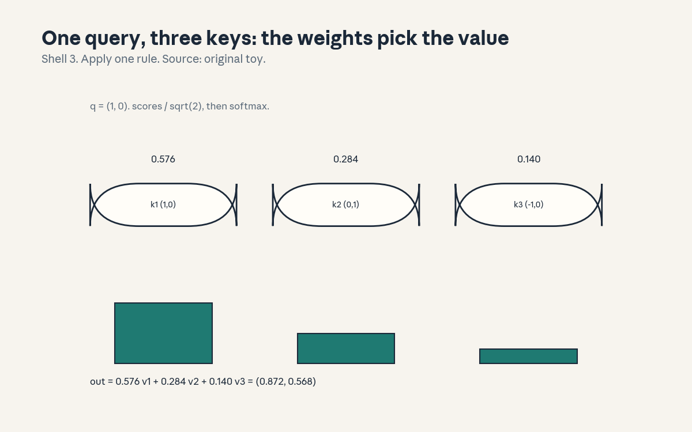
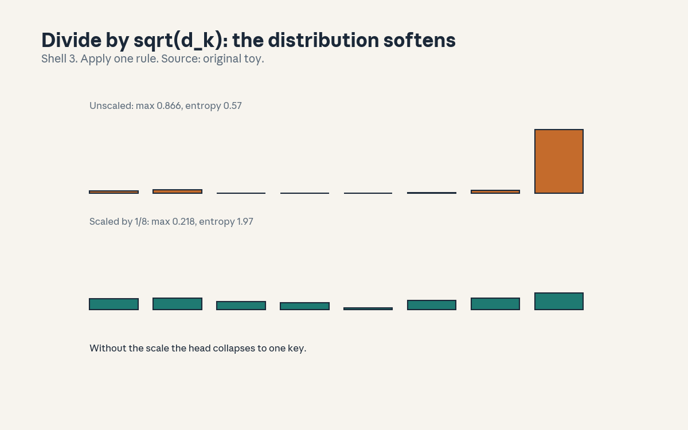
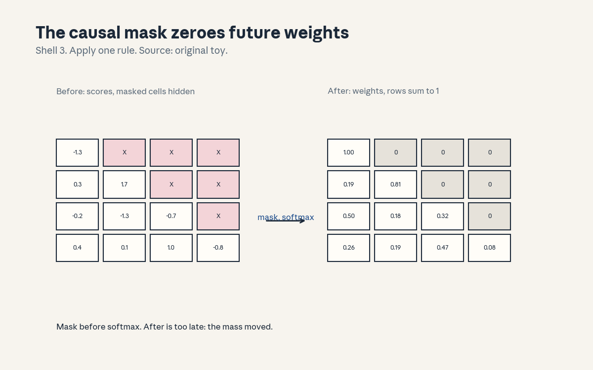

U05 · Attention and transformers
U05 , Attention and transformers
Local remediation
Bridges: ../shared/prerequisites/p12_pytorch.md (P12, tensor ops),
../shared/prerequisites/p14_transformer.md (P14, the architecture at
a glance). This unit rebuilds both from numpy so the machinery is
yours, not the framework’s.
R1. Dot product as similarity: (1,0).(1,0) = 1, (1,0).(0,1) = 0, (1,0).(-1,0) = -1. Parallel = high, orthogonal = zero, opposite = negative. Attention scores are similarities with learned geometry. R2. Softmax rows sum to 1: softmax(0.707, 0, -0.707) = (0.576, 0.284, 0.140), sum 1.000. Every attention row is a probability distribution over positions. R3. Shape arithmetic: (n, d) @ (d, d_k) = (n, d_k). (n, n) @ (n, d_v) = (n, d_v). If a product does not typecheck, the code is wrong, C09 makes this a reflex.
C01: query/key/value
Leaf id cs224n-U05-C01. Claim class REQUESTED-BRANCH.
Status PLANNED / SOURCE ATTRIBUTION PENDING.
-
Source mapping, scope, objectives, dependencies. Maps to the attention sessions of the Winter 2026 schedule (S06-S07 per
course_map.md). Scope: the QKV mechanism, one head. Objectives: define the three roles, compute one head by hand, state why three projections instead of one. Depends on R1, R2, R3. -
Motivating question and toy. Question: position 3 needs information from position 1, the RNN would squeeze it through 2 lossy steps (U04 C04). Can position 3 read position 1 directly? Toy: q = (1,0) asks “who is parallel to me”, keys answer, values carry the content. Weights (0.576, 0.284, 0.140) over the three keys.
-
Mental model. A retrieval system. The query is the question, the keys are the index, the values are the documents. Attention scores match the question against the index, the weights fetch a blend of the documents. Three learned projections let the model use different geometry for asking, indexing, and carrying.
-
Objects, symbols, units, shapes, assumptions. X: (n, d) input. W_q, W_k: (d, d_k). W_v: (d, d_v). Q, K: (n, d_k). V: (n, d_v). Scores S = QK^T: (n, n). Weights P = softmax(S): (n, n), rows sum to 1. Out = PV: (n, d_v). Assumption: d_k = d_v usually, the three projections are learned.
-
Derivation / mechanism. S_{ij} = q_i . k_j: every position scores every position, O(n^2 d_k). P = softmax(S / sqrt(d_k)) (the scale is C02). Out_i = sum_j P_{ij} v_j: a convex combination of values. No recurrence, no convolution: the only mixing is the weighted sum.
-
Computed example. From
compute_u05.py: q = (1,0), K rows (1,0), (0,1), (-1,0), V rows (2,0), (0,2), (-2,0). Scores (0.707, 0, -0.707). Weights (0.576, 0.284, 0.140). Output (0.872, 0.568) = 0.576 v1 + 0.284 v2 + 0.140 v3.
draws the three weights and the blend. -
Algorithm and reference implementation.
attention(Q, K, V): scores, scale, softmax, weighted sum. ~8 lines. Test: the toy numbers above. -
Correctness checks and expected output. Match scores, weights, output. Check: weights sum to 1. Check: with V = K the output is a blend of keys (sanity, not a use case).
-
Complexity, memory, statistical efficiency, stability, practical costs. Time O(n^2 d), memory O(n^2) for the score matrix. The quadratic cost is the transformer’s defining bill (C10). Stable: softmax with max subtraction (U03 C02 pattern).
-
Nearest alternatives and selection boundaries. Alternative: RNN state (U04): O(n) memory, lossy. Alternative: convolution: local only. Choose attention when any position may need any other (long range). Choose the alternatives when n is huge and locality suffices.
-
Failure case, broken assumption, counterexample. Broken assumption: “attention weights explain the model.” Counterexample: different weight matrices can give the same output (the values carry the content, weights are one factor). Weights are a clue, not an explanation. Do not ship interpretability claims on weights alone.
-
Research reading and falsifiable extension. Falsifiable extension: freeze the values to one-hot position codes and check whether high-weight positions predict output changes under input swaps. Predict: often they do not (values dominate). Falsifier: they always do (then weights are faithful here).
-
Breadth recall, deep oral ladder, unfamiliar transfer. Assessment block:
keys/u05_answers.mdA1 (breadth), L1 (ladder: define the roles, compute the toy, derive the blend, diagnose the explanation failure, design the freeze test). -
Lab/exercises with answers separated. E1: implement
attention, match the toy. E2: show weights sum to 1 for random Q, K. Keys inkeys/u05_answers.md. -
Visual units, provenance, accessibility, audit row. : one query’s weights and the blend, Shell 3, source original toy. Audit row in
visual_audit.md.
C02: scaled weights
Leaf id cs224n-U05-C02. Claim class REQUESTED-BRANCH.
Status PLANNED / SOURCE ATTRIBUTION PENDING.
-
Source mapping, scope, objectives, dependencies. Maps to the attention sessions (S06-S07). Scope: the 1/sqrt(d_k) factor. Objectives: derive why it is needed, compute both regimes, state the failure without it. Depends on C01 and P06 (variance).
-
Motivating question and toy. Question: d_k = 64, q and k have unit-variance entries, what do the raw dot products look like? Toy: dot variance = d_k = 64, std = 8. Softmax of values spread over +-16 collapses to one-hot. The head stops blending and stops learning (softmax saturates, gradients vanish).
-
Mental model. The scale is a calibration knob. Raw dots grow with d_k, dividing by sqrt(d_k) restores unit variance, so the softmax stays in its sensitive range. Without it, big models (big d_k) get peaked attention and dead gradients for free.
-
Objects, symbols, units, shapes, assumptions. d_k: head dimension. If q_i, k_i ~ N(0,1) independent, q.k has mean 0, variance d_k. Scale: S / sqrt(d_k) has variance 1. Assumption: unit-variance inputs (true at init, layer norm keeps it true, C05).
-
Derivation / mechanism. Var(sum_{i=1}^{d_k} q_i k_i) = sum Var(q_i k_i) = d_k (independence). Softmax saturates when inputs differ by more than ~5: with std 8, one key wins by luck of the draw. Dividing by 8 brings the spread back to ~1, where softmax discriminates instead of collapsing.
-
Computed example. From
compute_u05.py, d_k = 64, 8 keys: unscaled: max weight 0.866, entropy 0.571 (near one-hot). Scaled by 1/8: max weight 0.218, entropy 1.974 (spread out).
draws both distributions. The numbers are the lesson. -
Algorithm and reference implementation.
scaled_scores(Q, K): return Q @ K.T / sqrt(d_k). ~3 lines. Test: variance of the scaled scores ~1 on random unit inputs. -
Correctness checks and expected output. Match max 0.866 -> 0.218 and entropies 0.571 -> 1.974. Check: scaled score variance near 1 for d_k in {16, 64, 256}.
-
Complexity, memory, statistical efficiency, stability, practical costs. Free: one division. The cost is in forgetting it: saturated softmax, vanishing gradients, a model that trains like a hard-coded lookup.
-
Nearest alternatives and selection boundaries. Alternative: learned temperature: more flexible, less principled at init. Choose 1/sqrt(d_k) as the default (the init argument is tight). Tune only if attention entropy looks wrong in a trained model.
-
Failure case, broken assumption, counterexample. Broken assumption: “the scale is a minor detail.” Counterexample: the toy: entropy 0.571 vs 1.974. An unscaled head at d_k = 64 is a different mechanism (argmax routing) with dead gradients. The errors.md entry (U05 T1) is this bug.
-
Research reading and falsifiable extension. Falsifiable extension: train a tiny transformer with and without the scale, fixed init, and compare loss at 1k steps. Predict: unscaled trains slower or stalls. Falsifier: no difference (then d_k was small, check it).
-
Breadth recall, deep oral ladder, unfamiliar transfer. Assessment block:
keys/u05_answers.mdA2 (breadth), L2 (ladder: derive the variance, compute both regimes, explain saturation, diagnose the stall, design the ablation). -
Lab/exercises with answers separated. E3: implement
scaled_scores, match the entropy pair. E4: show score variance ~d_k unscaled, ~1 scaled, for d_k = 256. Keys inkeys/u05_answers.md. -
Visual units, provenance, accessibility, audit row. : unscaled vs scaled distributions, Shell 3, source original toy. Audit row in
visual_audit.md.
C03: MHA
Leaf id cs224n-U05-C03. Claim class REQUESTED-BRANCH.
Status PLANNED / SOURCE ATTRIBUTION PENDING.
-
Source mapping, scope, objectives, dependencies. Maps to the attention sessions (S06-S07). Scope: multi-head attention. Objectives: write the head split, explain why heads help, trace the shapes. Depends on C01, C02, C09.
-
Motivating question and toy. Question: one head gives one blend, what if position 3 needs “subject” from position 1 and “tense” from position 2 at once? Toy: h = 4 heads, d = 32, d_k =
-
Each head learns its own QKV geometry, the outputs concat and re-project.
-
Mental model. A panel of specialists, not one generalist. Each head attends in its own subspace (syntax, coreference, position). The output projection mixes the specialists’ reports. One head with d_k = 32 is not the same: the split forces separate score matrices.
-
Objects, symbols, units, shapes, assumptions. h heads, d_k = d/h. Per head: scores (n, n), out (n, d_k). Concat: (n, d). W_o: (d, d). Assumption: d divisible by h, heads share no parameters.
-
Derivation / mechanism. Head_i = attention(XW_qi, XW_ki, XW_vi). MHA = concat(heads) W_o. Parameters: 4 d^2 (Q, K, V, O projections). Compute: h times the single-head cost, same total FLOPs as one big head, but h independent (n, n) score matrices.
-
Computed example. Shape trace from
compute_u05.py, n = 8, d = 32, h = 4: per-head scores (8, 8), per-head out (8, 8), concat (8, 32), W_o (32, 32). The lab asserts every shape. -
Algorithm and reference implementation.
mha(X, params, h): split, per-head attention, concat, project. ~15 lines. Test: the shape trace. -
Correctness checks and expected output. Match all five shapes. Check: h = 1 reduces to single-head attention with d_k = d. Check: output shape (n, d) regardless of h.
-
Complexity, memory, statistical efficiency, stability, practical costs. Same FLOPs as single-head at width d, memory holds h score matrices (n, n) each. More heads = more diverse routing at fixed compute, too many heads = d_k too small to be useful.
-
Nearest alternatives and selection boundaries. Alternative: one wide head: same FLOPs, one routing decision. Choose MHA as the default (the standard). Choose fewer, wider heads when d_k < 32 starts to hurt (empirical).
-
Failure case, broken assumption, counterexample. Broken assumption: “heads specialize cleanly.” Counterexample: trained heads often redundantly attend to the same positions, some heads can be pruned with no loss. Specialization is a tendency, not a guarantee. Do not assign linguistic roles to heads without probing.
-
Research reading and falsifiable extension. Falsifiable extension: prune heads one by one on a trained tiny model and measure the loss delta. Predict: a long tail, a few heads matter. Falsifier: uniform deltas (then heads are symmetric, check the init).
-
Breadth recall, deep oral ladder, unfamiliar transfer. Assessment block:
keys/u05_answers.mdA3 (breadth), L3 (ladder: write the split, trace the shapes, derive the param count, diagnose the redundancy, design the pruning test). -
Lab/exercises with answers separated. E5: implement
mha, assert the five shapes. E6: verify h = 1 matches single-head. Keys inkeys/u05_answers.md. -
Visual units, provenance, accessibility, audit row. Claim is a shape trace (carried in text as the five shapes). Logged as an honest exception in
visual_audit.md.
C04: masks
Leaf id cs224n-U05-C04. Claim class REQUESTED-BRANCH.
Status PLANNED / SOURCE ATTRIBUTION PENDING.
-
Source mapping, scope, objectives, dependencies. Maps to the attention sessions (S06-S07). Scope: causal and padding masks. Objectives: write both, prove the order (mask before softmax), state the leak failure. Depends on C01 and U04 C09.
-
Motivating question and toy. Question: the decoder predicts w_4 from w_1..w_3, the full (n, n) score matrix lets position 3 see position 5. How is the future hidden? Toy: add -1e9 above the diagonal, then softmax. Upper triangle becomes exactly 0.
-
Mental model. A one-way mirror. The causal mask blinds each position to the future, the padding mask blinds all positions to filler (U04 C09). Both are added to the scores before softmax: -inf becomes 0 weight. After softmax is too late (the mass already moved, renormalizing leaks rank information).
-
Objects, symbols, units, shapes, assumptions. Causal mask M: (n, n), 0 on/below diagonal, -inf above. Padding mask: (n,), -inf at pad positions, broadcast over queries. P = softmax(S/sqrt(d_k) + M). Assumption: -1e9 stands in for -inf (finite, no nan).
-
Derivation / mechanism. softmax(z_i - 1e9) = 0 up to float precision: exp(-1e9) underflows to 0. The row renormalizes over allowed positions only. Masking after softmax (zeroing weights then renormalizing) gives different numbers: the disallowed scores shaped the distribution before they were cut.
-
Computed example. From
compute_u05.py, 4x4 random scores: row sums (1, 1, 1, 1), upper-triangle max 0.0. Row 1: (1.00, 0, 0, 0). Row 3: (0.50, 0.18, 0.32, 0).
draws scores vs weights. The numbers are the lesson. -
Algorithm and reference implementation.
causal_mask(n): triu(-1e9, k=1).apply_mask(scores, mask): scores + mask before softmax. ~6 lines. Test: the row sums and the zero triangle. -
Correctness checks and expected output. Match row sums and upper max 0.0. Check: masking after softmax gives different weights (demonstrate on the toy). Check: padding mask zeroes a pad column for every row.
-
Complexity, memory, statistical efficiency, stability, practical costs. Free (an add). The cost is the bug: a leaked future is a train/test skew that inflates validation scores silently. Always test the mask with a shift: predict position t from prefix only.
-
Nearest alternatives and selection boundaries. Alternative: no mask (encoder): every position sees every position. Choose causal for generation (the arrow of time). Choose padding mask whenever batches are padded. Choose neither only for full bidirectional encoding.
-
Failure case, broken assumption, counterexample. Broken assumption: “mask after softmax is equivalent.” Counterexample: the toy check: post-softmax masking renormalizes a distribution the future already shaped. The errors.md entry (U05 T2) is this bug. Test: weights must be exactly 0 above the diagonal, not just small.
-
Research reading and falsifiable extension. Falsifiable extension: train a decoder with the mask accidentally applied after softmax and compare validation perplexity to the correct version. Predict: the buggy one looks better (it peeked). Falsifier: identical (then the mask had no effect, check it).
-
Breadth recall, deep oral ladder, unfamiliar transfer. Assessment block:
keys/u05_answers.mdA4 (breadth), L4 (ladder: write both masks, prove the order, compute the toy, diagnose the leak, design the peek test). -
Lab/exercises with answers separated. E7: implement both masks, match row sums and zeros. E8: demonstrate post-softmax masking differs. Keys in
keys/u05_answers.md. -
Visual units, provenance, accessibility, audit row. : scores vs masked weights, Shell 3, source original toy. Audit row in
visual_audit.md.
C05: residual/normalization
Leaf id cs224n-U05-C05. Claim class REQUESTED-BRANCH.
Status PLANNED / SOURCE ATTRIBUTION PENDING.
-
Source mapping, scope, objectives, dependencies. Maps to the attention sessions (S06-S07). Scope: why deep stacks train. Objectives: write the residual update, write layer norm, explain what each fixes. Depends on U03 C01 (gradients) and P09.
-
Motivating question and toy. Question: 12 attention layers, each a learned function, what stops the gradient from dying across them (U04 C06 all over again)? Toy: y = x + F(x). The gradient dy/dx = I + dF/dx: the identity path carries signal even if F’s gradient vanishes. The block learns a correction, not a replacement.
-
Mental model. Residuals are express lanes. Each sublayer adds its contribution to the running representation, the gradient flows back along the skip untouched. Layer norm is the stabilizer: it re-centers each vector (mean 0, var 1) so the scale never drifts across layers.
-
Objects, symbols, units, shapes, assumptions. x: (n, d). Sublayer: attention or FFN. y = x + Sublayer(LN(x)) (pre-norm) or LN(x + Sublayer(x)) (post-norm). LN: per-vector mean/var norm, learned gain and bias. Assumption: shapes preserved (d in, d out) so the add typechecks.
-
Derivation / mechanism. dL/dx = dL/dy (I + dF/dx): the identity term guarantees a full-strength path. LN(x) = (x - mu) / sigma * gamma + beta: differentiable, per token, no batch statistics (unlike batch norm, which breaks on variable sequences).
-
Computed example. From
compute_u05.py: x = (1,2,3,4,5), normalized mean -0.0, var 1.000000 (0.999995 up to the eps). Pre-norm block sketch: the add keeps (n, d) -> (n, d), the lab asserts it. -
Algorithm and reference implementation.
layer_norm(x, g, b, eps): the formula, ~5 lines.block(x, sublayer, ...): pre-norm residual, ~6 lines. Test: mean/var on the toy, shape preserved. -
Correctness checks and expected output. Match mean -0.0, var ~1. Check: LN output has the same shape as input. Check: with F = 0 the block is the identity (the gradient path is exact).
-
Complexity, memory, statistical efficiency, stability, practical costs. O(n d) per norm: cheap next to attention. Pre-norm trains more stably at depth (the modern default), post-norm was the original. The choice matters past ~12 layers.
-
Nearest alternatives and selection boundaries. Alternative: batch norm: wrong for sequences (batch statistics leak across variable lengths). Choose layer norm (per token). Choose pre-norm for deep stacks, post-norm only to match a legacy checkpoint.
-
Failure case, broken assumption, counterexample. Broken assumption: “norm placement is cosmetic.” Counterexample: deep post-norm stacks need learning-rate warmup to train at all, the gradient through 24 post-norm layers without warmup explodes or stalls. Placement is a stability decision, stated up front.
-
Research reading and falsifiable extension. Falsifiable extension: train a 12-layer tiny transformer pre-norm vs post-norm, no warmup. Predict: pre-norm trains, post-norm stalls. Falsifier: both train (then the depth was too small to matter).
-
Breadth recall, deep oral ladder, unfamiliar transfer. Assessment block:
keys/u05_answers.mdA5 (breadth), L5 (ladder: write both formulas, compute the toy, derive the identity path, diagnose the no-warmup stall, design the placement test). -
Lab/exercises with answers separated. E9: implement
layer_norm, match mean/var. E10: show the block is the identity when F = 0. Keys inkeys/u05_answers.md. -
Visual units, provenance, accessibility, audit row. Claim is an identity path (carried in text as the gradient formula). Logged as an honest exception in
visual_audit.md.
C06: positions
Leaf id cs224n-U05-C06. Claim class REQUESTED-BRANCH.
Status PLANNED / SOURCE ATTRIBUTION PENDING.
-
Source mapping, scope, objectives, dependencies. Maps to the attention sessions (S06-S07). Scope: order without recurrence. Objectives: write sinusoid and learned encodings, explain why attention needs them, state the length limit. Depends on C01.
-
Motivating question and toy. Question: attention is a set operation (permute the input, permute the output identically), where did word order go? Toy: “dog bites man” vs “man bites dog” have the same multiset. Without positions, the model cannot tell them apart.
-
Mental model. Attention sees a bag, positions label the bag. Add a position vector to each token embedding (or bias the scores, as in relative schemes). The model then has both “what” and “where”. Sinusoids give a fixed ruler, learned encodings give a fitted ruler, both break at unseen lengths.
-
Objects, symbols, units, shapes, assumptions. PE(pos, 2i) = sin(pos / 10000^{2i/d}), PE(pos, 2i+1) = cos(…). Shape (n, d), added to embeddings. Learned: an (n_max, d) table. Assumption: addition (not concat) keeps d fixed, the model disentangles.
-
Derivation / mechanism. Sinusoid: each dimension is a wave with a different frequency, PE(pos + k) is a linear function of PE(pos) (rotation), so relative offsets are learnable. Learned: row pos of a table, no extrapolation past n_max.
-
Computed example. From
compute_u05.py, d = 4: PE(0) = (0, 1, 0, 1). PE(1) = (0.841, 0.540, 0.010, 1.000). The fast wave (freq 1) moved a lot, the slow wave (freq 0.01) barely moved. That is the ruler working. -
Algorithm and reference implementation.
sinusoid(n, d): the formula, ~8 lines. Test: match PE(0) and PE(1) above. -
Correctness checks and expected output. Match both vectors. Check: PE(pos) has norm ~sqrt(d/2) for all pos (bounded ruler). Check: permuting input without PE permutes output (the permutation-equivariance that makes PE necessary).
-
Complexity, memory, statistical efficiency, stability, practical costs. Sinusoid: free, fixed. Learned: n_max x d parameters. Length extrapolation is the cost: both degrade past the training max (the honest limit, carried into U06’s context discussion).
-
Nearest alternatives and selection boundaries. Alternative: relative positions (bias by offset, not absolute id). Choose absolute (sinusoid/learned) for the standard. Choose relative when length generalization matters more. All schemes assume a max length somewhere.
-
Failure case, broken assumption, counterexample. Broken assumption: “the model learns order from the data anyway.” Counterexample: without any position signal the architecture is permutation-equivariant (prove it: attention scores depend only on content pairs). No signal, no order, no matter how much data.
-
Research reading and falsifiable extension. Falsifiable extension: train with and without PE on an order-sensitive toy (e.g. reverse the sequence). Predict: no-PE gets chance. Falsifier: no-PE learns it (then order leaked another way, check the data).
-
Breadth recall, deep oral ladder, unfamiliar transfer. Assessment block:
keys/u05_answers.mdA6 (breadth), L6 (ladder: write the formula, compute PE(1), prove equivariance, diagnose the chance score, design the reversal test). -
Lab/exercises with answers separated. E11: implement
sinusoid, match PE(0)/PE(1). E12: prove permutation equivariance numerically (permute, compare). Keys inkeys/u05_answers.md. -
Visual units, provenance, accessibility, audit row. Claim is a ruler (carried in text as the two PE vectors). Logged as an honest exception in
visual_audit.md.
C07: feedforward
Leaf id cs224n-U05-C07. Claim class REQUESTED-BRANCH.
Status PLANNED / SOURCE ATTRIBUTION PENDING.
-
Source mapping, scope, objectives, dependencies. Maps to the attention sessions (S06-S07). Scope: the per-position FFN. Objectives: write it, count its parameters, explain its job. Depends on U03 C03 (MLP) and C05.
-
Motivating question and toy. Question: attention only mixes positions, where does per-position computation happen? Toy: FFN applied to each of the n vectors independently: (n, d) -> (n, 4d) -> (n, d). Same weights at every position.
-
Mental model. Attention is the meeting, the FFN is the desk work after. Each position processes its own vector through a two-layer MLP (expand, activate, contract). The 4x expansion is the capacity knob: most of the model’s parameters live here.
-
Objects, symbols, units, shapes, assumptions. W_1: (d, 4d), b_1: (4d,). W_2: (4d, d), b_2: (d,). FFN(x) = W_2 relu(W_1 x + b_1) + b_2, applied per position. Parameters: 8 d^2 per layer (vs 4 d^2 for attention). Assumption: the 4x ratio is convention, not law.
-
Derivation / mechanism. Per-position: no cross-talk, so it parallelizes trivially over n. The expansion gives the MLP room for features, the contraction returns to the residual width d so the add typechecks (C05).
-
Computed example. Shape trace (hand, labeled as such): d = 32, n = 8. In (8, 32) -> hidden (8, 128) -> out (8, 32). Parameters: 32x128 + 128 + 128x32 + 32 = 8320. The lab asserts the trace.
-
Algorithm and reference implementation.
ffn(x, W1, b1, W2, b2): the two layers, ~6 lines. Test: the shape trace. -
Correctness checks and expected output. Match (8,32) -> (8,128) -> (8,32) and 8320 params. Check: applying to a permuted input permutes the output (position-wise, no mixing).
-
Complexity, memory, statistical efficiency, stability, practical costs. O(n d^2) time, the dominant per-layer cost at small n (attention’s n^2 wins at large n). 2/3 of the layer’s parameters. The usual pruning target.
-
Nearest alternatives and selection boundaries. Alternative: wider attention instead: same params, different inductive bias. Choose the FFN as the default (the standard block). Shrink the expansion (2x) when parameters are the budget.
-
Failure case, broken assumption, counterexample. Broken assumption: “the FFN is just a nonlinearity.” Counterexample: remove it and keep attention: the model loses most of its capacity (2/3 of params) and per-position depth. Ablations show the drop. It is half the block, not a garnish.
-
Research reading and falsifiable extension. Falsifiable extension: train with expansion in {1, 4, 8} at fixed total params (adjust depth). Predict: 4 wins or ties. Falsifier: 1 wins (then depth mattered more than width here).
-
Breadth recall, deep oral ladder, unfamiliar transfer. Assessment block:
keys/u05_answers.mdA7 (breadth), L7 (ladder: write the layers, count 8320, derive the param share, diagnose the removal, design the expansion sweep). -
Lab/exercises with answers separated. E13: implement
ffn, assert the trace. E14: count params for d = 64. Keys inkeys/u05_answers.md. -
Visual units, provenance, accessibility, audit row. Claim is a shape trace (carried in text). Logged as an honest exception in
visual_audit.md.
C08: encoder/decoder distinctions
Leaf id cs224n-U05-C08. Claim class REQUESTED-BRANCH.
Status PLANNED / SOURCE ATTRIBUTION PENDING.
-
Source mapping, scope, objectives, dependencies. Maps to the attention sessions (S06-S07). Scope: the three architectures. Objectives: define encoder-only, decoder-only, encoder-decoder, state which mask each uses and what each is for. Depends on C04.
-
Motivating question and toy. Question: one block design, three jobs (classify, generate, translate). What changes? Toy: encoder (BERT-style): no causal mask, read the label off [CLS]. Decoder (GPT-style): causal mask, predict next. Enc-dec: encoder reads the source (no mask), decoder writes with cross-attention to the encoder.
-
Mental model. Three floor plans from one brick. Encoder-only: bidirectional, for understanding (classify, extract). Decoder-only: causal, for generation (the modern default). Encoder-decoder: two stacks joined by cross-attention, for conditioned generation (translation, summarization).
-
Objects, symbols, units, shapes, assumptions. Cross-attention: Q from the decoder, K/V from the encoder: (n_dec, n_enc) scores. Masks: encoder none, decoder causal, cross-attention padding only (the source is fully known). Assumption: the task decides, the block does not care.
-
Derivation / mechanism. No new math: the distinction is which masks and which K/V sources. Decoder-only training is U04 C01’s next-word loss with a transformer instead of an RNN. The mechanism that matters is C04’s: the mask is the architecture.
-
Computed example. Cross-attention shape trace (hand, labeled as such): n_dec = 6, n_enc = 10, d = 32. Scores (6, 10), weights (6, 10) rows sum to 1, out (6, 32). The lab asserts it.
-
Algorithm and reference implementation.
cross_attention(Q_dec, K_enc, V_enc, pad_mask): scores, mask, softmax, blend. ~8 lines. Test: the trace. -
Correctness checks and expected output. Match (6,10) scores, row sums 1, (6,32) out. Check: with no pad mask it reduces to full attention over the source.
-
Complexity, memory, statistical efficiency, stability, practical costs. Cross-attention costs O(n_dec n_enc d). Encoder-decoder doubles the stack (two sets of layers). Decoder-only won the era: one stack, one loss, scales.
-
Nearest alternatives and selection boundaries. Alternative: prefix LM (one stack, partial mask). Choose decoder-only for generation at scale. Choose encoder-only for classification with a small budget. Choose enc-dec when the conditioning input is long and separate (translation).
-
Failure case, broken assumption, counterexample. Broken assumption: “decoder-only can do everything enc-dec can.” Counterexample: with a 10k-token source and a short target, the decoder-only model re-reads the source every layer at full n^2 cost, enc-dec reads it once. The floor plan has a price.
-
Research reading and falsifiable extension. Falsifiable extension: translation at fixed params, enc-dec vs decoder-only (source+target concat). Predict: enc-dec wins on long sources. Falsifier: decoder-only wins everywhere (then the concat format was favorable, check it).
-
Breadth recall, deep oral ladder, unfamiliar transfer. Assessment block:
keys/u05_answers.mdA8 (breadth: name the three, their masks, their jobs). -
Lab/exercises with answers separated. E15: implement
cross_attention, assert the trace. E16: list the mask per architecture in a table. Keys inkeys/u05_answers.md. -
Visual units, provenance, accessibility, audit row. Claim is a floor plan (carried in text as the mask table). Logged as an honest exception in
visual_audit.md.
C09: shape checks
Leaf id cs224n-U05-C09. Claim class REQUESTED-BRANCH.
Status PLANNED / SOURCE ATTRIBUTION PENDING.
-
Source mapping, scope, objectives, dependencies. The unit’s debugging discipline. Scope: shape-driven development. Objectives: write the full shape trace of one layer, make shape asserts a habit. Depends on all of U05 so far.
-
Motivating question and toy. Question: the loss is nan and the shapes all “look right”. Where is the bug? Toy: the full trace below. The discipline: assert every intermediate, the assert that fires names the bug.
-
Mental model. Shapes are types. A transformer layer is a pipeline of typed transforms, a mismatch is a compile error you have to write yourself. The trace is the spec, the asserts are the compiler.
-
Objects, symbols, units, shapes, assumptions. One layer, n = 8, d = 32, h = 4, d_k = 8. X (8,32) -> Q,K,V (8,32) -> split (4, 8, 8) -> scores (4, 8, 8) -> weights (4, 8, 8) -> heads out (4, 8, 8) -> concat (8, 32) -> W_o (8, 32) -> residual add (8, 32) -> FFN hidden (8, 128) -> out (8, 32).
-
Derivation / mechanism. No new math: this is the composition of C01-C08 with dimensions attached. The mechanism is the habit: every function asserts its input and output shapes.
-
Computed example. The trace above is the example (from
compute_u05.py’s MHA section, extended by hand through the FFN, labeled where hand-extended). The lab implements the trace as asserts. -
Algorithm and reference implementation.
layer_trace(n, d, h): return the list of (name, shape) pairs. ~10 lines. The lab turns it into asserts inside each function. -
Correctness checks and expected output. All 12 shapes match. Check: change h to 8, d_k becomes 4, the trace updates (the function computes, not hardcodes).
-
Complexity, memory, statistical efficiency, stability, practical costs. Asserts are free (disabled in prod with -O if paranoid). The cost is the extra lines, the payoff is the first time one fires.
-
Nearest alternatives and selection boundaries. Alternative: debuggers and prints: slower, stateless. Choose asserts (they stay in the code and document the contract). This is a discipline, not a tradeoff.
-
Failure case, broken assumption, counterexample. Broken assumption: “the shapes matched, so the code is right.” Counterexample: transposed scores (n, n) still typecheck (square!): the mask lands on the wrong axis. Shapes are necessary, not sufficient. Pair them with the value checks in C01-C04.
-
Research reading and falsifiable extension. Falsifiable extension: deliberately transpose the scores and run the toy checks. Predict: shapes pass, values fail (row sums still 1, but the causal pattern breaks). Falsifier: values pass too (then the test was symmetric, fix it).
-
Breadth recall, deep oral ladder, unfamiliar transfer. Assessment block:
keys/u05_answers.mdA9 (breadth: recite the trace). -
Lab/exercises with answers separated. E17: implement
layer_trace, match all 12 shapes. E18: the transpose trap: show shapes pass and values fail. Keys inkeys/u05_answers.md. -
Visual units, provenance, accessibility, audit row. Claim is a trace (carried in text). Logged as an honest exception in
visual_audit.md.
C10: training/inference cost
Leaf id cs224n-U05-C10. Claim class REQUESTED-BRANCH.
Status PLANNED / SOURCE ATTRIBUTION PENDING.
-
Source mapping, scope, objectives, dependencies. Maps to the systems-flavored sessions. Scope: what the transformer costs. Objectives: write the per-layer FLOPs, contrast train vs inference, state the n^2 bill. Depends on C01, C07.
-
Motivating question and toy. Question: training is fast (parallel over n) but inference crawls (serial over n). Why both? Toy: per layer, attention O(n^2 d), FFN O(n d^2). Training does all n positions at once, inference generates one token at a time, re-reading the context.
-
Mental model. Two different bills. Training: one big parallel matmul per layer, the n^2 score matrix materialized once. Inference: n serial steps, without the cache (C11) each step redoes O(t^2) work. The transformer trains like a parallel machine and generates like an RNN.
-
Objects, symbols, units, shapes, assumptions. Per layer per token: attention 4 n d^2 (projections) + 2 n^2 d (scores+blend), FFN 16 n d^2 (two layers at 4x). Units: FLOPs. Assumption: counting multiply-adds, ignoring memory traffic (the honest simplification, stated).
-
Derivation / mechanism. Projections: 4 matmuls of (n, d) @ (d, d): 4 n d^2. Scores: (n, d)(d, n) per head: n^2 d total. Blend: same. FFN: (n,d)@(d,4d) + (n,4d)@(4d,d) = 8 n d^2 multiply-adds x2 = 16 n d^2. At large n the n^2 term dominates, at small n the FFN does.
-
Computed example. Toy (hand, labeled as such): n = 512, d = 1024, one layer. Attention: 2 x 512^2 x 1024 = 0.54 GFLOP. FFN: 16 x 512 x 1024^2 = 8.59 GFLOP. Projections: 4 x 512 x 1024^2 = 2.15 GFLOP. Total ~11.3 GFLOP per layer forward. The FFN dominates at this n, the n^2 term takes over past n ~ 8d.
-
Algorithm and reference implementation.
flops(n, d): return the three terms and the total. ~6 lines. Test: the toy numbers. -
Correctness checks and expected output. Match 0.54, 8.59, 2.15, 11.3 GFLOP. Check: doubling n quadruples the attention term, doubles the FFN term.
-
Complexity, memory, statistical efficiency, stability, practical costs. Memory: the (n, n) scores per head per layer (training). Inference memory: the KV cache (C11). The practical cost is context length: 4x the context = 16x the attention FLOPs.
-
Nearest alternatives and selection boundaries. Alternative: linear attention / SSMs: O(n) but different quality. Choose the standard transformer when quality first. Choose alternatives when n is extreme (100k+) and the bill dominates.
-
Failure case, broken assumption, counterexample. Broken assumption: “FLOPs predict speed.” Counterexample: at small n the model is memory-bandwidth bound (loading weights), not compute bound, doubling d barely changes step time. Roofline thinking beats FLOP counting for inference.
-
Research reading and falsifiable extension. Falsifiable extension: measure step time vs n for the toy sizes and fit the curve. Predict: quadratic fit at large n, flat at small n (bandwidth bound). Falsifier: linear throughout (then the measurement was wrong, check batching).
-
Breadth recall, deep oral ladder, unfamiliar transfer. Assessment block:
keys/u05_answers.mdA10 (breadth), L10 (ladder: write the terms, compute the toy, derive the crossover, diagnose the flat timing, design the scaling fit). -
Lab/exercises with answers separated. E19: implement
flops, match the toy. E20: find the n where attention passes the FFN for d = 1024. Keys inkeys/u05_answers.md. -
Visual units, provenance, accessibility, audit row. Claim is a FLOP budget (carried in text). Logged as an honest exception in
visual_audit.md.
C11: KV cache bridge
Leaf id cs224n-U05-C11. Claim class REQUESTED-BRANCH.
Status PLANNED / SOURCE ATTRIBUTION PENDING.
-
Source mapping, scope, objectives, dependencies. The bridge to inference systems (U06). Scope: the KV cache. Objectives: explain what is cached and why, compute the saving, state the memory price. Depends on C01, C10.
-
Motivating question and toy. Question: generating token 17 recomputes keys and values for tokens 1..16 (they did not change). What is saved, and what does it cost to keep? Toy: per layer per head, cache K and V: 2 x t x d_k floats at step t. Work per step drops from O(t^2 d) to O(t d).
-
Mental model. A memo pad. The past’s keys and values are frozen (causal: they never change), so store them once and attend against the pad. Each new token appends one row. The pad grows with the conversation: memory for speed.
-
Objects, symbols, units, shapes, assumptions. Cache per layer: K_cache (t, d), V_cache (t, d): 2 t d floats. Step t+1: compute q, k, v for the new token only, scores = q @ K_cache^T: O(t d). Assumption: causal (past never changes), batch 1 for the simple version.
-
Derivation / mechanism. Without cache, step t costs O(t^2 d) (recompute all pairs), total over n steps O(n^3 d). With cache, step t costs O(t d), total O(n^2 d). The saving is a full factor of n in the total. Memory price: 2 x layers x n x d floats.
-
Computed example. From
compute_u05.py, n = 16, d = 8, per head per layer: no cache 23936, cached 2176, ratio 11.0x. The ratio grows with n (it is ~2n/3 here, linear in n). -
Algorithm and reference implementation.
decode_step(q_new, k_new, v_new, K_cache, V_cache): append, attend, return token and new cache. ~10 lines. Test: matches full recomputation exactly. -
Correctness checks and expected output. Match 23936/2176. Check: cached decode equals non-cached decode bit-for-bit (the cache is exact, not approximate). Check: cache size 2 t d after t steps.
-
Complexity, memory, statistical efficiency, stability, practical costs. Time saved: factor ~n. Memory: 2 L n d floats (e.g. 32 layers, n = 8k, d = 4096: 2 GB in fp16). The cache is the inference memory story, U06 builds on it.
-
Nearest alternatives and selection boundaries. Alternative: recompute (no cache): less memory, O(n^3) time. Choose the cache always for autoregressive decoding (exact, standard). Evict/compress only when memory forces it (U06).
-
Failure case, broken assumption, counterexample. Broken assumption: “the cache is free.” Counterexample: the 2 GB above, long contexts OOM on the cache, not the weights. The fix is cache quantization or eviction, not smaller weights.
-
Research reading and falsifiable extension. Falsifiable extension: decode 64 tokens with and without cache, measure time. Predict: cached wins by ~10x+. Falsifier: tie (then n was tiny, the overhead dominated).
-
Breadth recall, deep oral ladder, unfamiliar transfer. Assessment block:
keys/u05_answers.mdA11 (breadth), L11 (ladder: define the cache, compute the saving, derive the memory price, diagnose the OOM, design the timing test). -
Lab/exercises with answers separated. E21: implement
decode_step, verify exactness vs recompute. E22: compute the cache GB for 32 layers, n = 8k, d = 4096, fp16. Keys inkeys/u05_answers.md. -
Visual units, provenance, accessibility, audit row. Claim is a saving ratio (carried in text). Logged as an honest exception in
visual_audit.md.
C12: independent implementation
Leaf id cs224n-U05-C12. Claim class REQUESTED-BRANCH.
Status PLANNED / SOURCE ATTRIBUTION PENDING.
-
Source mapping, scope, objectives, dependencies. The unit’s capstone. Scope: one transformer layer from numpy, no help. Objectives: assemble C01-C07 + C09 into a working layer, verify against the checks. Depends on all of U05.
-
Motivating question and toy. Question: can you write the layer without looking? Toy: n = 4, d = 16, h = 2. Embeddings + sinusoid in, pre-norm MHA + residual, pre-norm FFN + residual, out. Every shape asserted (C09).
-
Mental model. The layer as a recipe: normalize, attend, add, normalize, transform, add. Six lines of numpy with asserts between them. If you can write it cold, you own the architecture, if not, the gaps point back to the concept that needs work.
-
Objects, symbols, units, shapes, assumptions. x: (4, 16). After MHA block: (4, 16). After FFN block: (4, 16). Assumption: random weights, pre-norm, causal mask on.
-
Derivation / mechanism. No new math: composition. The mechanism is the assembly order: PE add -> LN -> MHA -> residual -> LN -> FFN -> residual. The order is the architecture.
-
Computed example. The lab runs it: output shape (4, 16), finite values, and (the check that matters) permuting the input without PE permutes the output, with PE it does not.
-
Algorithm and reference implementation.
transformer_layer(x, params): the six lines with asserts. The lab writes it, the key gives the reference order. -
Correctness checks and expected output. Shape (4, 16), all finite. Gradient flows (one backward step, no nan). The PE permutation check.
-
Complexity, memory, statistical efficiency, stability, practical costs. The capstone costs one careful hour. The payoff: every later unit (U06-U08) assumes this fluency.
-
Nearest alternatives and selection boundaries. No alternative: this is the skill. The selection is effort: write it cold before reading the key.
-
Failure case, broken assumption, counterexample. Broken assumption: “I understand it because I read it.” Counterexample: the transpose trap (C09): readers miss it, writers catch it. Writing is the test.
-
Research reading and falsifiable extension. Falsifiable extension: time yourself writing the layer cold, then list the concepts you hesitated on. Predict: the hesitations map to real gaps. Falsifier: fluent throughout (then move to U06).
-
Breadth recall, deep oral ladder, unfamiliar transfer. Assessment block:
keys/u05_answers.mdA12 (breadth: recite the six lines). -
Lab/exercises with answers separated. E23: write
transformer_layercold, pass all checks. E24: run the PE permutation check. Keys inkeys/u05_answers.md. -
Visual units, provenance, accessibility, audit row. is reused as the unit’s closing image: the mask is the architectural decision. Logged in
visual_audit.md.
Unit visual map
| Figure | Claim | Shell | Source |
|---|---|---|---|
| one query’s weights pick the values | 3 | original toy | |
| 1/sqrt(d_k) softens the distribution | 3 | original toy | |
| causal mask zeroes future weights | 3 | original toy |